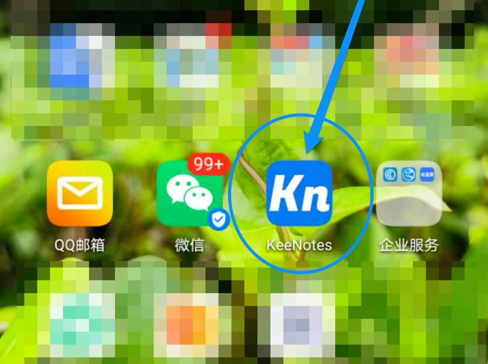
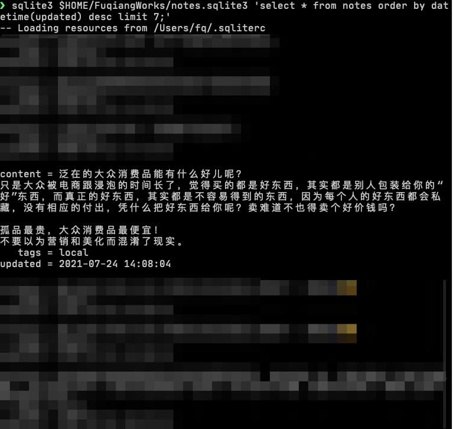

也谈谈知识管理与真实
王福强
昨天晚上一心多用地听了范冰的直播(dei, 就是写《增长黑客》的那个范冰)，加上前面一两次，感觉有些东西还是很有戚戚焉，当然，更多还是压力， 搞得我昨天都没睡好，这后浪眼睁睁地要拍死人啊，哈哈哈，不过换个思路也可以， 说明前浪还没落后太多，；）
知识管理
PKM(Personal Knowledge Management)这词儿我也不知道是谁coin的，但我这些年的感受就是， 这东西完全因人而异，工具海量的一逼(什么evernote、notion、flomo，blablabla…)， 包括去年尝试搞了KeeNotes桌面版， 但依然不及自己根据场景灵活搭配组合出来的一套个人Note管理体系，但不管怎么变，有一个原则我是认同的，那就是： 访问快，启动快，够持久! 需要的不是什么花里胡哨，需要的是简单直接！
访问快(short access path) 是说想到什么可以马上记录下来，脑子里有个什么想法，如果还要解锁屏幕、点开app、选择菜单或者会话， 那么，那个想法可能已经忘记了，所谓闪念，就是一闪而过，当它闪过的时候，最好可以马上就记录下来。 范冰提到，就锤子手机的闪念胶囊貌似是见过的这方面最好的产品，但我没用过，确信的一点就是，这个理念是对的。 暂时这个层面，我自己打造的工具链还无法满足这个关键指标，所以，日常确实有些想法等想记录的时候，已经忘了要记录啥了。 （我是在自己的公众号上开了API，可以以跟它聊天的形式记录短note，也就是闪念，另外，如果要记录的东西长一点儿，环境也没那么开放，我会直接说而不是打字，公众号后台会将语音信息通过腾讯语音的API转成文本再发送回来，我再检查文本翻译结果，如果有错误，再适当编辑之后发送记录到自己的note server）
启动快(fast bootstrap) 是选择记录工具的另一个指标，因为当要写东西的时候，脑子里一堆的关键词和提醒需要马上记录下来，然后再扩充内容并补充细节，工具做得再好，功能再丰富、再酷炫，但如果启动慢，那我是绝对接受不了的，所以，要么常驻，要么就像我现在这样 ，宁愿用MacDown和Sublime Text，极简够用，等完成差不多了，再统一转移到整个Note管理的Git仓库做版本管理和备份。包括手机端，我也自己搞了个极简的app，就是为了启动快，路径短，交互快：

够持久(persistence and durability) 是说所有东西都要备份从而保证持久化不遗失，否则，你耗费了那么多脑力和精力不就太可惜了嘛！这方面可以参考“备份的321原则”，我因为一直没有腾出手把加密工具搞了，所以，现在的备份都是“本机 + home server + NAS”，暂时缺个offsite备份（上云）。
原则就是这些原则，但因为就跟吃饭的口味一样，萝卜白菜各有所爱，相信工具链的组合千差万别，每个人还是按照自己的喜好来吧~
大众泛在
这个话题比较有意思的就是，范冰提到的大众与小众的观点，我下午的时候恰好也记录了一条闪念：

简单一句话就是， 大众泛在的，从来不是什么最好的东西。
动态看人
这个是前面某次直播里的观点，也是跟个人这些年的观察和感受一致， 就算是大牛也很少动态地看人（就更不要说其他人了）。
说要growth mindset，真有的又有几个？ 偏见明显更有能量和市场；）
将心注入
“将心注入与否”决定产品差距， 这个只能算顺便发个小感慨，因为昨天周末刷了部尼古拉斯凯奇的的新片，这哥们这些年终于拍了部不太烂的片儿。
作为曾经的风云人物，凯奇的江湖名号有目共睹：

反过来，当他隐退之后，接班的人虽然就职高档餐厅服务大众，并觉得自己很有荣耀感，但被凯奇一通blablabla之后，就开始痛哭流涕了：

差别在哪儿？ 差别就是你做一件事情，有没有真的倾情投入、把心注入？ 还是说只是为了份工作和薪水甚至虚名？ 就算是简单的法式咸面包这样简单的单品，做得好与不好，也是差别巨大， “same recipe？”， “yeah，same recipe”
华章出版社的英子去年撺掇我增补或者重写《Spring揭秘》，我为啥婉拒了？ 因为心不在那儿了，当时当刻与现时的差别在哪儿？ 现在应该知道了吧？要么做精品，要么就不做 😁
「为AI疯狂」星球上，扶墙老师正在和朋友们讨论有趣的AI话题，你要不要⼀起来呀？^-^
这里
- 不但有及时新鲜的AI资讯和深度探讨
- 还分享AI工具、产品方法和商业机会
- 更有原价1000多的付费内容(近500分钟)等着你，加入星球(https://t.zsxq.com/0dI3ZA0sL) 即可免费领取!